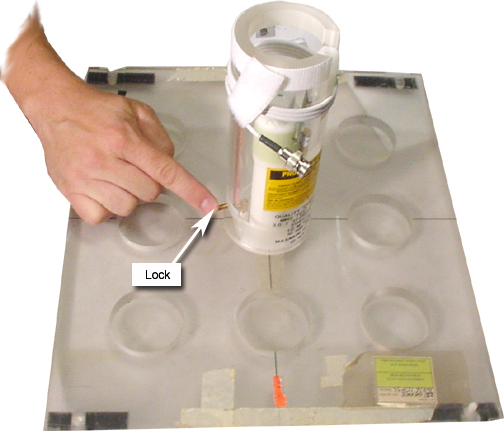
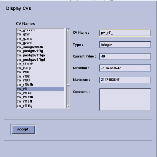
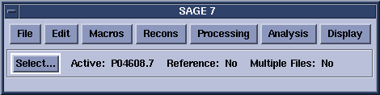
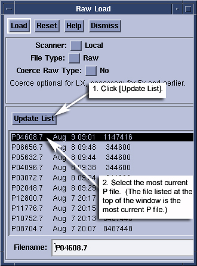
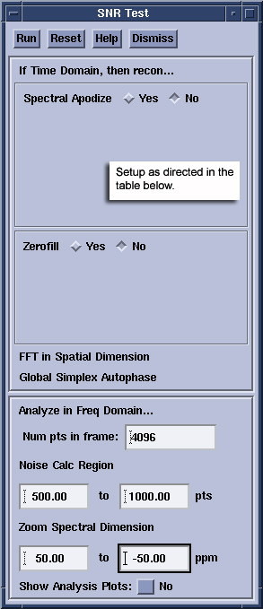
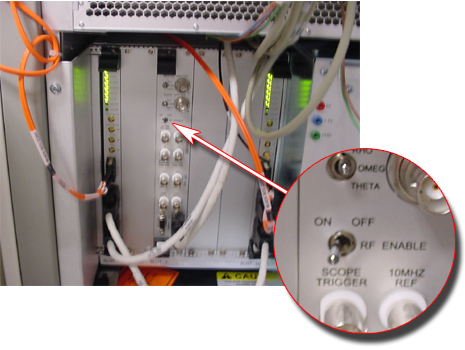
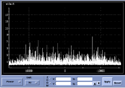
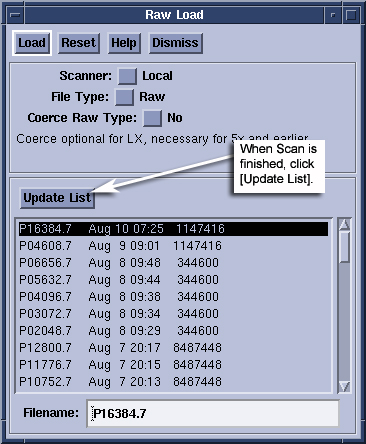

Operating Documentation
Direction 5500113, Rev# 3
Discovery MR750 3.0T Service Methods
Module Version 1.0, Version Date 4/25/07
Operating Documentation |
| Required Persons | Preliminary Reqs | Procedure | Finalization |
|---|---|---|---|
| 1 | Not Applicable | 45 mins | Not Applicable |
The tests in this section are used to verify the operation of the Multi Nuclear Spectroscopy (MNS) subsystem. All the tests utilize a TR module and Quality Assurance (QA) probe for the nucleus under test (e.g. 13C or 31P). The tests are run in the same manner regardless of field strength or nucleus, therefore this single set of instructions will cover both 13C and 31P nuclei on 1.5T and 3.0T systems.
Table 1: Minimum Performance Limits For The Multi Nuclear Spectroscopy Subsystem
| Nucleus | Field Strength | Min MagAt TG = 0 | Min. SNR | Max NoiseStdev |
| 13C | 1.5T | 1.0 x10e8 | 40 | 33000 |
| 31P | 1.5T | 2.0 x10e8 | 120 | 33000 |
| 13C | 3.0T | 1.0 x10e9 | 120 | 33000 |
| 31P | 3.0T | 1.0 x10e9 | 280 | 33000 |
Illustration 1: Required Components

| Item | Qty | Effectivity | Part# | Manufacturer | |
|---|---|---|---|---|---|
| 13C 1.5T | 1 | - | 2354050-3 - TR Module | - | |
| - | - | - | 5114403 - QA Probe | - | |
| 13C 3.0T | 1 | - | 2354050-6 - TR Module | - | |
| - | - | - | 5114403-3 - QA Probe | - | |
| 31P 1.5T | 1 | - | 2354050-2 - TR Module | - | |
| - | - | - | 5114403-2 - QA Probe | - | |
| 31P 3.0T | 1 | - | 2354050 - TR Module | - | |
| - | - | - | 5114403-4 - QA Probe | - | |
| 9-hole USS and Grafidy base plate | 1 | - | 46-271410 | - | |
| Condition | Reference | Effectivity |
|---|---|---|
MNS option installed and amplifier calibrated. | - | - |
MNS TR module and QA coil. | - | - |
Install the TR module onto the top of the LPCA cover
Connect the transmit (thick) and receive (thin) cables to the connectors on the LPCA cover.
Place the Grafidy base plate on the patient bed near the top of the bed.
Place the QA probe in the center hole of the Grafidy plate and lock into place. See Illustration 2.
Illustration 2: QA Probe In The Center Hole Of The Grafidy Plate And Lock Into Place

Connect the QA probe cable to the quick disconnect module.
Connect the QD module to the TR module.
Landmark on the center of the QA probe and advance to scan.
Start a New Exam, click New Patient.
Enter geservice<Enter> for Patient ID.
Enter MNS Setup<Enter> for Patient Name.
Enter 111<Enter> for Patient Weight.
From the Service->Other protocols choose MNS Setup.
Select the Func Test, series 1, for the nucleus under test and click [Accept].
Landmark on the center of the QA probe, if not already completed during Hardware Setup.
Click [Save Series].
Right-click on [Research Options] and select [Display CVs].
Set the following CVs :
flip_rf1 = 10, press <Enter>.
pw_rf1 = 40, press <Enter>. See example screen, Illustration 3.
xmtaddSCAN = 200, press <Enter>.
Click [Accept].
Right-click on [Research Options] and select [Download]
Illustration 3: CV Display Example pw_rf1

Click [Spectro Prescan].
Slide [R1] and [R2] to the maximum positions.
Set [TG] (Transmit Gain) to 0 (zero).
Set the top display mode to [Magnitude].
Click [Start]. After a few seconds you should see a peak in the top display and a free induction decay (FID) in the bottom display as shown in Illustration 4.
| NOTE: | Illustrations are for a 3.0T system. Intensities will be about 2 times lower at 1.5T. |
Illustration 4: Typical prescan signal for 31P (left) and 13C (right) at 3.0T. 13C spectrum is 4 closely spaced peaks and has been centered.

Adjust the center frequency to center the peak in the Magnitude window, using [Delta Frequency DX ]. After each adjustment click [Apply].
Record the Magnitude peak height. The peak height at TG = 0 should exceed the minimum acceptable value in Table 1.
Use Zoom Mode functions to measure. See Illustration 5.
Illustration 5: Measuring with Zoom Mode

Hardware Setup
Install the TR module onto the top of the LPCA cover
Connect the transmit (thick) and receive (thin) cables to the connectors on the LPCA cover.
Place the Grafidy base plate on the patient bed near the top of the bed.
Place the QA probe in the center hole of the Grafidy plate and lock into place.
Connect the QA probe cable to the quick disconnect module.
Connect the QD module to the TR module.
Landmark on the center of the QA probe and advance to scan.
Scanner Setup
Start a new exam.
Enter geservice<Enter> for Patient ID.
Enter MNS Setup<Enter> for Patient Name.
Enter 111<Enter> for Patient Weight.
From the [Service]->[Other protocols] choose [MNS Setup].
Select the [SNR Test] series for the nucleus under test and click [Accept].
Landmark on the center of the QA probe, if not already completed during Hardware Setup.
Click [Save Series].
Right-click on [Research Options] and select [Display CVs].
Set the following CVs:
flip_rf1 = 10, press <Enter>
pw_rf1 = 40, press <Enter>
xmtaddSCAN = 200, press <Enter>
Click [Accept].
Right-click on [Research Options] and select [Download].
Click [Spectro Prescan].
Slide [R1] and [R1] to the maximum position.
Set [TG](Transmit Gain) to 0 (zero).
Set the top display mode to [Magnitude].
Click [Start]. After a few seconds you should see a peak in the top display and a free induction decay (FID) in the bottom display.
Adjust the center frequency to center the peak in the Magnitude window.
Change the display mode in the top window to [Pure Absorp]. The shape of the peak will change with some of the signal dipping below zero. The distortion will vary depending on QA coil and scanner.
Use the [Zero Order Phase] control to adjust the shape of the peak until it is fully positive and symmetric as shown in Illustration 6.
Illustration 6: Typical uncorrected (left) and corrected (right) Pure Absorp. 31P peak shape. The Zero Order Phase control was used to correct the spectrum until all signal was positive and the peak shape was symmetric.

Increase [TG] by units of 10 until the peak decreases and becomes slightly negative, about -180.
Decrease [TG] slowly until the peak is split half-positive and half-negative. See Illustration 7.
Illustration 7: Example of Half-Positive and Half-Negative

Record this null value for [TG].
Subtract 60 units from the null [TG] value and set [TG] to this value. Now the peak will be positive again and at maximum amplitude.
Click [Stop] and then [Done].
Scanning and Analysis
Click [Scan] to collect the SNR data.
Switch to the [Tools] Workspace and open a Command Window.
Type sage<Enter> to initiate the SAGE spectroscopy analysis tool. See Illustration 8.
Illustration 8: Example of Sage Tool

Click [File]->[Load]->[Rawdata] to open the load raw data dialog window. See Illustration 9.
When the scan is finished click [Update List] to refresh the list of P files to choose from. See Illustration 9.
Illustration 9: Example of Raw Load Window

The top-most P file is the latest. Select this file and click [Load]. See Illustration 9.
In the main SAGE panel, select Macros->[Func Tests]->[SNR Test…]. See Illustration 10.
Move the windows around if necessary.
Illustration 10: SNR Test Window

Setup the SNR Test window as listed in Table 2 for the nucleus under test.
Table 2: SNR Test Panel settings for 13C and 31P SNR tests.
| Field | 13C Setting | 31P Setting |
| Spectral Apodize | YES | NO |
| Function: Exponential | ||
| LB 2.5 Hz | ||
| Line Shaping NO | ||
| Zero Fill | NO | NO |
| Num pts in frame | 4096 | 4096 |
| Noise Calc Region | 500 to 1500 | 500 to 1500 |
| Zoom Spectral Dimension | 50 to –50 ppm | 50 to –50 ppm |
| Show Analysis Plots | NO | NO |
Click [Run] on the SNR Test window. The SNR will be calculated for the active data set and reported in the command window where SAGE was started.
Illustration 11: Example of Data Set

Record the n=32 value for peak SNR (AmpSNR). Compare to the minimum acceptable value in Table 1.
Hardware Setup
Install the TR module onto the top of the LPCA cover.
Connect the transmit (thick) and receive (thin) cables to the connectors on the LPCA cover.
Place the Grafidy base plate on the patient bed near the top of the bed.
Place the QA probe in the center hole of the Grafidy plate and lock into place.
Connect the QA probe cable to the quick disconnect module.
Connect the QD module to the TR module.
Landmark on the center of the QA probe and advance to scan.
Scanner Setup
Start a new exam, click [New Patient].
Enter geservice<Enter> for Patient ID.
Enter MNS Setup for Patient Name.
Enter 111<Enter> for Patient Weight.
From the [Service]->[Other protocols] choose [MNS Setup].
Select the [Noise Scan] series for the nucleus under test and click [Accept].
Landmark on the center of the QA probe, if not already completed during Hardware Setup.
Click [Save Series].
Right-click on [Research Options] and select [Display CVs].
Set CV ia_rf1 = 0 and then click [Accept].
Right-click on [Research Options] and select [Download]
Click [Spectro Prescan].
Slide [R1] and [R1] to the maximum position.
Set [TG] to 0 (zero).
Disable the RF switch at the systems cabinet. See Illustration 12.
Illustration 12: RF Switch Disabled

Set the top display mode to [Power].
Click [Start]. After a few seconds you should see a band of noise across the power spectrum as shown in Illustration 13.
Illustration 13: Noise Test Power Spectrum In Spectro Prescan. There Should Be No Distinct Broad Peaks Across The Spectrum. The Noise Intensity Should Taper Off Near The Edges.

The tops of the noise should be about even across the window without any peaks. Peaks in the power spectrum may indicate a source of noise in the scan room.
Click [Stop] and then [Done].
Scanning and Analysis
Click [Scan] to collect the Noise data.
Switch to the [Tools] Workspace and open a Command Window.
Type sage<Enter> to initiate the SAGE spectroscopy analysis tool. See Illustration 14.
Illustration 14: Sage Window
Click [File]->[Load]->[Rawdata] to open the load raw data dialog window. See Illustration 15.
Illustration 15: Raw Data Load Window

When the scan is finished click [Update List] to refresh the list of P files to choose from. See Illustration 15.
The top-most P file is the latest. Select this file and click Load.
In the main SAGE panel, select [Macros]->[Func Tests]->[SNR Test…]
Move the windows around if necessary.
Setup the SNR Test window as listed in Table 3 for the nucleus under test.
Illustration 16: SNR Test Window

Table 3: SNR Test Panel Settings For Noise Tests
| Field | 13C Setting | 31P Setting |
| Spectral Apodize | NO | NO |
| Zero Fill | NO | NO |
| Num pts in frame | 4096 | 4096 |
| Noise Calc Region | 500 to 3500 | 500 to 3500 |
| Zoom Spectral Dimension | 240 to –240 ppm (1.5T) | 150 to –150 ppm (1.5T) |
| 480 to –480 ppm (3.0T) | 300 to –300 ppm (3.0T) | |
| Show Analysis Plots | NO | NO |
Click [Run] on the SNR Test window. The noise will be calculated for the active data set and reported in the command window where SAGE was started.
Record the n=32 value for Noise. Compare to the maximum acceptable value in Table 1.
Illustration 17: Example of Noise Data

In the spectrum window, select Chan->[Power].
The spectrum should be flat across the window with tapering to zero at each edge as shown in Illustration 18. Broad peaks in this window suggest unwanted noise in the scan room. Use this test as a tool for tracking down noise sources if found.
Illustration 18: Noise test power spectrum following calculations in SAGE. There should be no distinct broad peaks across the spectrum. The noise intensity should taper off near the edges.

To zoom out and see the full spectrum, click [Zoom], then right click in the window and select [Unzoom]. Right click again and click [Quit] to exit the zoom control.
Enable the RF Switch at the systems cabinet. See Illustration 19.
Illustration 19: RF Switch Enabled

Remove any hardware used during system testing.
Do a test scan of the system to ensure proper operation.